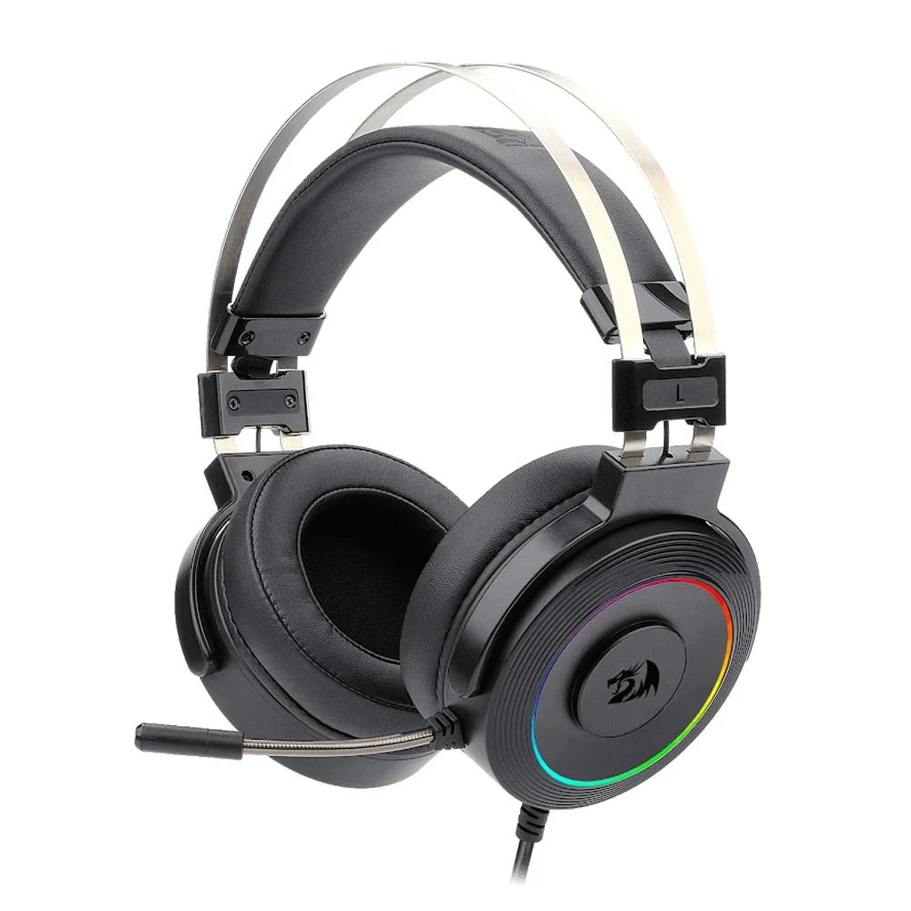

Redragon Lamia 2!

Redragon Lamia 2:
Fone simples e funcional, com bom custo-benefício — ótimo para quem quer som decente sem gastar muito.
R$: 259,99
Vídeo de Apresentação:
Visão Geral
Redragon Lamia 2 é a opção prática pra quem busca algo funcional sem exagero. Com som equilibrado, estrutura resistente e conforto razoável, ele faz bonito em jogos, vídeos ou chamadas. Não é premium, mas entrega o essencial: áudio decente e bom custo-benefício — ideal pra setups básicos ou quem quer economizar sem abrir mão do necessário.
Especificações Técnicas – Redragon Lamia 2
- Tipo: Over-ear (geralmente fechado)
- Conectividade: P2 3.5 mm (analógico)
- Resposta de frequência: ~20 Hz – 20 kHz
- Driver: Dinâmico (tamanho padrão, ~40–50 mm dependendo da versão)
- Impedância: padrão para headsets gamer (~32 Ω)
- Microfone: integrado, com captação básica — suficiente para voz e calls
- Almofadas: conforto médio — uso para jogos casuais, vídeos, vídeo-aulas, etc.
- Compatibilidade: PC, consoles, notebooks, celular (via adaptador P2 se preciso)
- Uso recomendado: jogos casuais, uso geral, aulas, calls, entretenimento
Outros dos nossos produtos:

Teclados
Teclados mecânicos, RGB, e muito mais!

Mouses
Mouses ergonômicos e precisos com design moderno.

Fones de Ouvido
Fones com cancelamento de ruído e áudio imersivo.